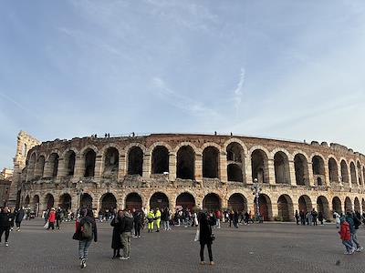
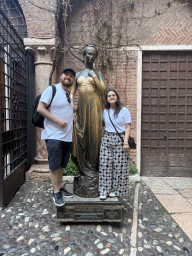
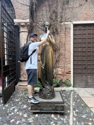
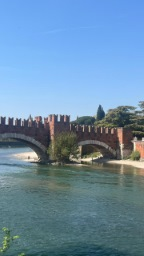

Verona
Verona é conhecida como a cidade do amor, eternizada por Shakespeare em Romeu e Julieta. Mas além da famosa história, ela guarda um patrimônio romano impressionante, ruas medievais charmosas e uma atmosfera vibrante que mistura romance e cultura. É uma cidade que respira arte e música, especialmente durante o verão, quando sua arena se transforma em palco de óperas.




Milão → Verona
Saindo de Gorla, pegue a linha vermelha (M1) até Loreto. Lá, faça a baldeação para a linha verde (M2) e siga até a estação Centrale.
Na Estação Central de Milão, compre seu bilhete de trem para Verona Porta Nuova.
A viagem dura cerca de 1h30 e custa em torno de 15 a 25 euros por trecho.
Pontos Turísticos Imperdíveis
- Arena di Verona: Anfiteatro romano ainda em uso, com capacidade para milhares de pessoas. Assistir a uma ópera aqui é uma experiência única.
- Casa di Giulietta: O famoso balcão que atrai visitantes do mundo inteiro. Apesar de turístico, é um símbolo da cidade.
- Ponte Pietra: Ponte romana sobre o rio Adige, que conecta história e paisagem.
- Duomo di Verona: Igreja medieval com afrescos e detalhes arquitetônicos que mostram a riqueza religiosa da cidade.
Gastronomia em Verona
- Primo piatto: Risotto all’Amarone, feito com vinho típico da região.
- Secondo piatto: Carne de cavalo, tradição local que pode surpreender.
- Sobremesa 🍰: Pandoro, doce natalino criado em Verona.
Dica dos Ussinhos 🐻💡
Melhor época: verão, durante o festival de ópera. Vale para quem busca romance e cultura além de Milão.